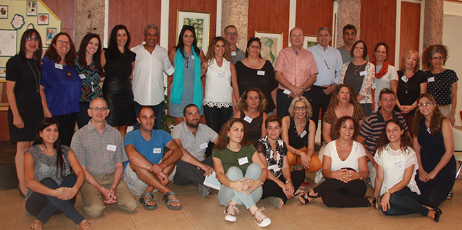

התוכנית נפתחה בקריאה ובניתוח של טקסט פילוסופי, ולאחר מכן הקדשנו זמן להיכרות. בעיצומו של היום ציינו את השנה החדשה שבפתח בהרמת כוסית חגיגית בהשתתפות ראש העיר אילת, מר מאיר יצחק הלוי, מנכ"ל קרן מנדל-ישראל, מר משה ויגדור, מנהל מינהל שח״ק, ד״ר דרורי גניאל, מנכ"לית מועצת אילות, גב' הדס שפירא, מנהלת מרכז מנדל למנהיגות בנגב ד"ר עדי ניר שגיא, ובוגרי המחזור הראשון של תוכנית מנדל למנהיגות מקומית באילת.
ראש העיר אילת, מר מאיר יצחק הלוי, ציין את החשיבות הרבה שהוא רואה בפיתוח מנהיגות בעיר ובאזור, וכן בקיומה של תוכנית מנהיגות מטעם גוף כה מקצועי כמו מרכז מנדל למנהיגות בנגב. הוא הוסיף שבכוונתו לנהל קשר רציף לאורך התוכנית עם מנהלי התוכנית ומשתתפיה.
ד"ר דרורי גניאל בירך את המשתתפים, הדגיש את האמונה המעמיקה שלו בחינוך ובהכשרה של מנהיגים ופרס את תפיסותיו לגבי היכולות של מנהיג טוב, לומד, שואל שאלות ומוביל. כך רואה את הכשרת המשתתפים בתהליך ארוך ומעמיק.
גברת הדס שפירא שיתפה את נקודת מבטה האישית כמנכ"לית החדשה של מועצת אילות והדגישה את החשיבות של ההבנה המנהיגותית בעשייה ואת קידום השאיפות והחלומות של העמיתים הלכה למעשה ככאלה שיהפכו את החיים באזור לטובים יותר במשמעותם העמוקה.
מר משה ויגדור, מנכ"ל קרן מנדל-ישראל, הדגיש את מרכזיות המנהיגות ואת החשיבות שבהכשרתה. הוא ציטט את שירה של המשוררת אלה וילר וילקוקס "רוחות הגורל": "...ספינה אחת שטה מזרחה, האחרת שטה למערב, עם רוח נושבת אחת, אשר נושאת את שתיהן. ערכת המפרשים, ולא הסערה, היא זו שתקבע את דרכן". בדבריו הדגיש את החשיבות שהוא רואה לחינוך למנהיגות תוך לימוד מעמיק, כך שהמפרשים יסייעו למשתתפי התוכנית להוביל על-פי ערכים, עקרונות, חזון ותפיסת עולם, ולא על בסיס רוח מזדמנת ורגעית.
ד"ר עדי ניר שגיא, מנהלת המרכז, בירכה את המתקבלים ואת מנהלי התוכנית וציטטה את שירו של אברהם (סונה) בן יצחק "אַשְׁרֵי הַזּוֹרְעִים וְלֹא יִקְצֹרוּ כִּי יַרְחִיקוּ נְדוֹד". היא הדגישה את המסר, שמעשה הזריעה משול לעשייה של מנהיגים: זריעה המסמלת הסתכלות ארוכת טווח, תכנון, נתינה תוך היעדר ציפייה לשכר ולגמול. ולכן מכוונת לזריעה רוחנית וכדברי המשורר " אַשְׁרֵי הַיּוֹדְעִים אֲשֶׁר יִקְרָא לִבָּם מִמִּדְבָּר"- כך המשתתפים המכוונים ללמידה, נתינה ואחריות לקידומה של חברה טובה יותר.
המברכים איחלו לעמיתים החדשים הצלחה במסע הלמידה האישי והקבוצתי, אתגר ומבט מחודש על העיר ועל המרחב עם מבט לאופק של מעשי מנהיגות שיצעידו את אילת ואילות למקומות חדשים ואיכותיים.
בחציו השני של היום פרסה ד״ר עדי ניר שגיא את תיאוריית השינוי של מנדל, והיום נחתם בתיאור תהליך הלמידה המצפה לנו בשנה הקרובה.

{kind=link}